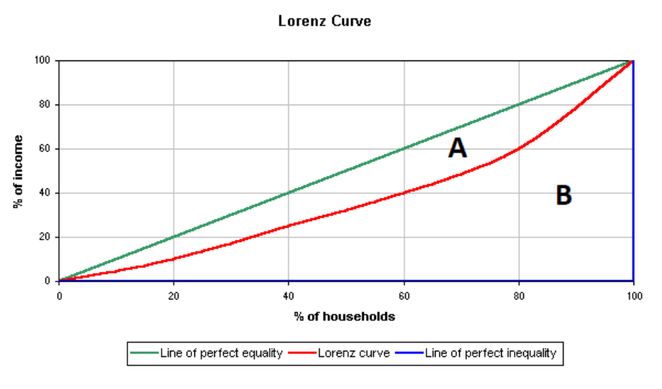

Lecture 1: Feature Extraction and PCA
In the first part of the course, we discussed one approach to solving the problem of data dimensionality reduction: feature selection. By using different feature selection methods, we can control the size of the feature space, thereby obtaining relatively simpler models to overcome the overfitting issue. In this lecture, we will introduce another type of methods of data dimensionality reduction, which is also an essential concept in machine learning: feature extraction. Feature extraction can be understood as a general term for methods that construct new variables from the original ones.
By using the original feature variables to create a relatively smaller set of new feature variables, we can control the size of the feature space. At the same time, a good machine learning model depends on two factors: efficient algorithms and a well-designed feature space. It is not hard to understand that if we have an absolutely ideal feature space—one that is linearly separable—then simply applying a basic algorithm can yield a perfect predictive model. Therefore, feature extraction plays a crucial role in machine learning applications.
1. Introduction to feature extraction
So, how does feature extraction create new feature variables? Let’s start by looking at a few examples. The first example is one we’re all familiar with: BMI, or Body Mass Index. It is a measurement used to assess whether a person has a healthy body weight. It is calculated by dividing a person’s weight in kilograms by the square of their height in meters, \[ \text{BMI} = \frac{\text{weight (kg)}}{\text{height (m)}^2} \]
Clearly, BMI is a new variable created from the original variables. It not only reduces the number of variables (from two variables, height and weight, to one BMI variable) but also provides a more effective and convenient way to assess overall health. Thus, BMI is a classic example of feature extraction. From a mathematical perspective, BMI is a function of the original variables, height and weight, i.e. \(\text{BMI} = g(h,w)\).
By the way, in statistics, we usually refer to variables derived from original variables as latent variables. Latent variables are typically used to represent quantities that cannot be directly observed or measured. This is easy to understand: we can use a ruler and a scale to measure height and weight, but there is no direct instrument to measure BMI—it has to be calculated from height and weight. Therefore, in machine learning, we often refer to the space formed by extracted feature variables as the latent space.
A more complex example is the Gini coefficient. The Gini coefficient measures inequality in income or wealth distribution. It ranges from 0 (perfect equality) to 1 (perfect inequality) and is based on the Lorenz curve, comparing actual distribution to perfect equality. For example, the map below shows the Gini coefficients of various countries, allowing us to understand their levels of equity.

So, how is the Gini coefficient calculated? The Gini coefficient is calculated using the Lorenz curve, which plots the cumulative share of income or wealth against the cumulative share of the population. The formula is: \[ G = \frac{A}{A + B} \] where \(A\) is the area between the Lorenz curve and the line of perfect equality, and \(A + B\) is the total area below the line of perfect equality.

It can also be computed directly using income data as: \[ G = 1 - \sum_{i=1}^{n} (y_i + y_{i-1})(x_i - x_{i-1}) \] where \(x\) and \(y\) are cumulative population and income shares. People can collect household income data from different countries, but the Gini coefficient must be computed based on these raw data.
Now, let’s look at an example more relevant to machine learning. Take a look at the scatter plot below. Clearly, we want to use the two feature variables, \(X_1\) and \(X_2\), to distinguish the red points from the black points. You can think about how to create a new variable using the two feature variables to solve this classification problem.
You may already have the answer. Yes, we can calculate the distance of each point from the origin to create a new feature variable, i.e. for each point \(i\),
\[ D_i = \sqrt{ X_1^2 + X_2^2 } \]
Then, we can choose an appropriate cutoff to differentiate the black points from the red points. This is also an example of feature extraction, where the extracted feature is a function of the original feature variables, i.e. \(D = g(X_1, X_2)\).
By now, I guess you’ve probably realized something. Do you remember how we introduced linear classifiers in the first part of the course? Yes, first, we compute the weighted sum of the feature variables, then compare it with an appropriate cutoff. In fact, a linear classifier is essentially doing feature extraction first, and then comparing the extracted feature with a cutoff. This feature extraction is also a function of the original feature variables, that is:
\[ Z = g(X_1, X_2, \dots, X_p) = \sum_{j = 1}^p w_jX_j \]
Now, we can summarize the discussion. Feature extraction is about finding an appropriate function \(g()\) of the original feature variables to transform and create new feature variables.
The examples above share a common characteristic: they all design feature extraction methods based on the problem’s specific characteristics, using domain knowledge (prior knowledge) or specific rational analysis. This approach is often referred to as domain knowledge based feature extraction or manual feature extraction. The benefits of this method are obvious, but it has a significant drawback: it heavily depends on prior information. Next, we will introduce the star of this lesson, PCA, which is an algorithm that learns the feature extraction function from the data, i.e. data driven solution.
Quiz:
Use simple language to explain to your family what feature extraction is.
We introduced the concept of ‘feature mapping’ idea for creating a nonlinear model in the first part of this course. Is feature extraction also a kind of feature mapping?
2. Principle Components Analysis
PCA is an important data analysis method in statistics, particularly in multivariate statistical analysis. Mathematicians and statisticians have studied it extensively and in great depth. Among them, the Swedish üá∏üá™ mathematician and statistician Herman Wold made significant contributions to the understanding and expansion of PCA‚Äôs essence. In fact, if we review his works on PCA related issues, we can even catch glimpses of the modern artificial neural network models. Let us pay tribute to this great pioneer! üé©üëè

2.1 What is PCA?

PCA is a linear feature extraction tool. Let’s first provide the definition:
PCA is a linear numerical method for creating a relatively smaller set of mutually orthogonal new variables from the original dataset and the most information can be preserved in the new dataset.
Next, let me explain each highlighted key words in the definition.
New variables and Linear: The term “new variable” is easy to understand. PCA is a type of feature extraction method, and the results of feature extraction are essentially new variables. However, this feature extraction, or the map \(g()\), is not arbitrary; we constrain it to be linear. In other words, all the new variables must satisfy the following equation:
\[ g_{\textbf{w}}(\textbf{x}) = w_1x_1 + w_2x_2 + \dots + w_px_p \] where \(\textbf{x}\) expresses all the \(p\) original feature variables, and \(\textbf{w}\) contains all the \(p\) coefficients. A straightforward example is the average. The average is a widely used method of summarizing information in real-life situations. It is the time to awkwardly show the generation gap. For example, in old-style music competitions, a singer would typically receive scores from several judges after their performance. Then, the host would say, “Remove the highest score, remove the lowest score, and the final score is……” The final score is just the average. More precisely, it is the truncated mean.

Here, I want to emphasize something for you. To make it more memorable, let me start with a sad memory.
Sad memories: In middle school, I was very good at mathematics and physics, and also terrible at English and literature. The end of every exam was always the most awkward moment for me. Say I got 100 scores both for mathematics and physics, but 0 scores both for English and literature. My teacher simply informed the average score as the overall evaluation of my study to my parents. I guess she used the following formula \[ \frac{1}{4} \text{Math} + \frac{1}{4} \text{Physics}+ \frac{1}{4} \text{English} + \frac{1}{4} \text{Literature} \] Obviously, I was hopeless. However, my smart mother courageously stepped up, she simply adjusted the coefficients of the feature extraction function, \[ \frac{1}{2} \text{Math} + \frac{1}{2} \text{Physics}+ 0 \cdot \text{English}+ 0 \cdot \text{Literature} \] and told me that you are actually great!
A good choice of coefficients not only can save a young people but also leads to a informative new variable for different purposes. This sad story highlights the role of coefficients in the feature extraction function. In one word, different coefficients lead to different information.
I would like to use the above picture to close the discussion about this keyword. Essentially, the extracted feature is just the weighted sum of original features, while the weighted sum is called linear combination in linear algebra and the geometry meaning of linear combination is projection. I strongly suggest you read about mathematical projection if you are not familiar with this concept.
This hand shadow game is a good example. If you don’t know it, just looking at the two hands won’t immediately tell you what the performer wants to show the audience. But once the light casts a shadow, the image of a dog becomes clear. The basic idea of feature extraction is similar—by using the right feature extraction function, useful information can be presented in a way that is easy for a computer to recognize. In one words, the new variable can be viewed as a shadow of the object (\(\textbf{x}\)) from a proper direction (\(\textbf{w}\)).
Information : Based on the discussion above, it’s not difficult to see that the goal of the PCA algorithm is to find a set of suitable coefficients to achieve feature extraction. But what does “suitable” coefficients mean? Are there specific criteria for this? To understand the answer to this question, we need to take a closer look at the key term “information”.
In statistics and information theory, we have many measures of information. In PCA, however, we use a simple and familiar measure to quantify how much information a variable contains, that is “Variance”. Let’s start with an interesting example.
I will present two events—think about which one you would be more eager to share with your family or friends:
Event 1: This morning, the sun rose in the east.
Event 2: NASA has just admitted to observing UFOs over the past 10 years.
I think you already have the answer. No rush, let me and my wife simulate this scenario, as shown in the picture below.

On the left, my wife immediately saw through my trick of avoiding cooking at home. On the right, she was genuinely shocked by the news—although she still figured out my trick five minutes later. For us, the amount of information in a message depends on how surprising it is. Essentially, information amount is roughly equal to the degree of surprise.
Another example, I tell two students, “You can pass this exam.” The first student has prepared well and is confident in their answers, while the second student didn’t do well and feels uncertain. Clearly, the amount of information my message carries is completely different for them. Therefore, the degree of surprise in a message depends on the uncertainty of the event it describes. In statistics, uncertainty is usually measured by variance.
Let me use one last example to convince you. Suppose we have an epidemiological dataset about cervical cancer, which includes age, gender, BMI, and various health indicators. Now, which variable do we absolutely not need? Think about what the variance of this variable would be.
Orthogonal : At this point, we’ve basically understood the core idea of how PCA extracts new variables. However, there’s one more thing to clarify: for a dataset containing many variables, we usually extract a set of new variables. The PCA algorithm has a specific requirement for the relationship between these extracted variables, which is orthogonality. Simply put, orthogonality means that there is no linear relationship between the extracted variables, meaning their covariance is zero. We’ll see this more clearly in a concrete example later.
2.2 PCA Problem
With all this groundwork laid out, it becomes much easier to understand how PCA extracts variables from the original dataset. Simply put, PCA first aims to find a set of coefficients to calculate new variables, and this set of coefficients is designed to maximize the variance of the extracted new variables. Suppose, we have \(p\) variables in a dataset. \[ \max_{\textbf{w}} \left\{ \text{Var} \left( \underbrace{w_1 \cdot x_1 + w_2 \cdot x_2 + \dots + w_p \cdot x_p}_{\text{extracted feature}} \right) \right\} \]
By solving this optimization problem, we obtain an optimizer \(\textbf{w}_1\) that is a set of coefficients for computing the first new variable. We call \(\textbf{w}_1\) the first Principal Component weights (PC weithgs), and the variable calculated using these coefficients is commonly known as the first principal component. Of course, these are just statistical terms. In machine learning, this is simply a feature extraction function obtained through an algorithm under certain constraints.
As mentioned earlier, we usually need to extract a series of new variables from the original dataset to replace the old ones, achieving dimensionality reduction. Finding the second set of coefficients is not much different from the previous problem—we still aim to maximize the variance of the resulting variable. However, the key difference is that we need to add a constraint to ensure that we do not obtain the same first PC weights again. This constraint is what we call orthogonality before.
\[ \max_{\textbf{w}: \textbf{w} \perp \textbf{w}_1} \left\{ \text{Var} \left( \underbrace{w_1 \cdot x_1 + w_2 \cdot x_2 + \dots + w_p \cdot x_p}_{\text{extracted feature}} \right) \right\} \] Some linear algebra knowledge is needed to fully understand \(\textbf{w} \perp \textbf{w}_1\), but you can ignore the details for now and just remember two key points:
- This condition prevents us from obtaining the first set of PC weights again.
- The second principal component (new variable) obtained this way will be linearly uncorrelated with the first principal component.
Of course, if needed, we continue searching for the third set of PC weights. This time, we need to add two orthogonality constraints to ensure it remains uncorrelated with both the first and second principal components, that is \(\textbf{w} \perp \textbf{w}_1\) and \(\textbf{w} \perp \textbf{w}_2\). By following this approach, we can continue finding more PC weights. In fact, we can obtain up to \(p\) new variables—yes, the same number as in the original dataset.
You might be wondering: How does this achieve dimensionality reduction? Let’s explore this in the next section with a concrete example.
3. PCA Algorithm and A Simple Example
3.1 PCA Algorithm
In the previous section, we discussed what PCA is and the optimization problem it involves. This optimization problem is actually quite easy to solve because it is equivalent to an eigenvalue decomposition problem. Here, we will skip the mathematical details and directly present the algorithm, explaining how to obtain PC weights and use them to compute the new data matrix. Finally, we will demonstrate this with a small example.
Algorithm: Principal Components Analysis
Inputs:
- \(\textbf{X}\), \(n\times p\) matrix, containing all \(p\) feature variables.
Steps:
- Calculate the covariance matrix, \(S_{\textbf{X}}\)
- Perform eigenvalue decomposition on the covariance matrix, \(S_{\textbf{X}} = \textbf{W} \boldsymbol{\Lambda} \textbf{W}^{\top}\). \(\mathbf{W}\) is a \(p \times p\) matrix, where each column, \(\textbf{w}_j\), is an eigenvector, and we call it weights matrix. \(\boldsymbol{\Lambda}\) is a diagonal matrix, where each diagonal element \(\lambda_j\) is the eigenvalue corresponding to its eigenvector \(\textbf{w}_j\).
- Calculate the new data matrix: \(\mathbf{Z} = \mathbf{XW}\)
Output: The new data matrix, \(\mathbf{Z}\), the weights matrix, \(\mathbf{W}\), and the matrix of eigenvalues, \(\boldsymbol{\Lambda}\).
First, it is not difficult to guess that the PC weights we are looking for are exactly the column vectors in \(\mathbf{W}\). Each column vector (eigenvector) \(\textbf{w}_j\) is a p-dimensional vector, which contains the weights needed for each original variable when computing the new variables.
Second, an observation no mater in the original data matrix, \(\textbf{x}_i\), i.e. each row in \(\textbf{X}\), or a new observation, \(\textbf{x}_{new}\), we can calculate the new variable (extracted feature) as \(\textbf{x}_i^{\top}\textbf{w}_j\) or \(\textbf{x}_{new}^{\top}\textbf{w}_j\). For the entire original data matrix, we can compute all possible extracted feature variables by matrix multiplication at once, i.e. \(\mathbf{Z} = \mathbf{XW}\).
Finally, the eigenvalue matrix, \(\boldsymbol{\Lambda}\), contains the variance of all extracted features, which represents the amount of information they carry.
Remark: In many textbooks, authors emphasize that the mean of all variables should be removed before performing PCA. This step is not essential, but it can lead to slight differences in the calculation of eigenvectors depending on the algorithm used. We will not go into too much detail on this here.
3.2 A Simple Example
In this section, we use a simple example to demonstrate how to implement PCA with a simple program in R. First, we import the data, record some basic information, and visualize the data
dat = iris #import data
X = as.matrix(dat[,-5]) #take the 4 feature variables and save them in a matrix
n = dim(X)[1] #record the sample size
p = dim(X)[2] #record the number of variables
pairs(X, col = dat$Species) #visualize the data in a pairwise scatter plotNext we do PCA on data matrix X. First, we calculate the covariance matrix.
S = cov(X) # calculate the covariance matrixSecond, do eigenvalue decomposition on covariance matrix S and save the results in res. In R, we can apply function eigen to perform eigenvalue decomposition.
res = eigen(S)
str(res)List of 2
$ values : num [1:4] 4.2282 0.2427 0.0782 0.0238
$ vectors: num [1:4, 1:4] 0.3614 -0.0845 0.8567 0.3583 0.6566 ...
- attr(*, "class")= chr "eigen"As shown above, the results of the eigenvalue decomposition contain all the information we need. slot values contains all the eigenvalues, and vectors contains all the eigenvectors, that is the optimal weights matrix.
W = res$vectors # define the weights matrix W
w_1 = W[,1] # the first column of W is the first PC weights.
w_1[1] 0.36138659 -0.08452251 0.85667061 0.35828920Above, we define the weights matrix \(\textbf{W}\), and the first column, \(\textbf{w}_i\), contains the optimal weights for calculating the first extracted variables. Next, we extract the first PC of the first flower.
X[1, , drop = F] Sepal.Length Sepal.Width Petal.Length Petal.Width
[1,] 5.1 3.5 1.4 0.2X[1, , drop = F]%*%w_1 # or, you can try sum(X[1,]*w_1) which is more like a weighted sum. [,1]
[1,] 2.81824So, \(2.81824\) is just value of first PC for the first flower. We can extract the first PC for all the flowers together, then we get the first new variable.
z_1 = X%*%w_1You can print out z_1 in your own computer and you will see it is a \(150 \times 1\) vector. We can even use matrix multiplication more efficiently to extract all possible principal components (PCs) at once.
Z = X%*%W
dim(Z)[1] 150 4You can see that the new data matrix Z has the same dimension as the original data matrix X. But what is the advantage of the new data matrix? We can find the answer by comparing the covariance matrices of the two data matrices.
round(cov(X),2) Sepal.Length Sepal.Width Petal.Length Petal.Width
Sepal.Length 0.69 -0.04 1.27 0.52
Sepal.Width -0.04 0.19 -0.33 -0.12
Petal.Length 1.27 -0.33 3.12 1.30
Petal.Width 0.52 -0.12 1.30 0.58round(cov(Z),2) [,1] [,2] [,3] [,4]
[1,] 4.23 0.00 0.00 0.00
[2,] 0.00 0.24 0.00 0.00
[3,] 0.00 0.00 0.08 0.00
[4,] 0.00 0.00 0.00 0.02It is easy to see that, compared to the original data matrix, the covariance matrix of the new data matrix is much simpler. The new variables are not only uncorrelated, but their variances gradually decrease.
This means that the amount of information contained in the variables of the new data matrix gradually decreases. The first new variable contains the most information, while the last new variable carries very little. Based on this, we can easily decide which variables to discard from the new matrix. This is the key essence of the PCA algorithm.
round(res$values,2)[1] 4.23 0.24 0.08 0.02Finally, let’s take a look at the eigenvalues obtained from the eigenvalue decomposition. Yes, the eigenvalues represent the variances of the new variables, which indicate the amount of information they contain.
4. Discussion
Let’s conclude this lecture with a discussion. We call PCA a data-driven solution, meaning it does not rely on any prior information. However, it is important to emphasize that PCA is merely a linear feature extraction method. The concept of linearity is straightforward: all extracted feature variables are just weighted sums of the original variables. But how can we understand linearity from a geometric perspective? Let’s explore this idea with the following toy example.
In this example, we have two variables, or two dimensions, represented by the blue coordinate axes. The red and orange lines represent two sets of PC weights, meaning the new variables are the projections of all the observations onto these lines. This requires a bit of imagination. Imagine that all the observations fall perpendicularly onto the red line, which gives us the first new variable. Similarly, by projecting onto the orange direction, we get the second new variable. It’s easy to see that the variance (or information) along the red line is much higher than that along the orange line. Therefore, we can discard the orange variable, effectively reducing the dimensionality while preserving most of the information. Therefore, the linearity of PCA lies in the fact that we are simply re-examining the original feature space from different angles. In other words, we do not disturb the relative positions of the original observations.
The advantage of PCA is that the algorithm is simple and can be easily understood from a geometric perspective, but its limitations are quite apparent as well. First, its feature extraction does not rely on any target information to guide it. The feature extraction process only depends on the covariance structure of the original data. Second, its feature extraction capability is quite limited. We can see that all possible feature extraction methods are determined by the covariance structure inherent in the data. At most, we can have as many feature extraction functions as there are original variables, but most of them will be useless. Therefore, PCA is NOT very flexible, and when the problem becomes complex, it often fails to provide an effective feature extraction solution.
PCA is like God rotating a globe, viewing what happens on this blue planet from different angles. When there’s a problem, God steps in to fix it. However, this gentle approach is linear. But when humanity presents too many complicated challenges, even God might be powerless, allowing the devil to intervene with non-linear methods in extreme ways to solve the problem.
This might not be the best analogy, especially since I‚Äôve received warnings and restrictions while generating images with ChatGPT, but it is indeed quite vivid. So, let‚Äôs remember to take care of our beautiful blue planet. üåç